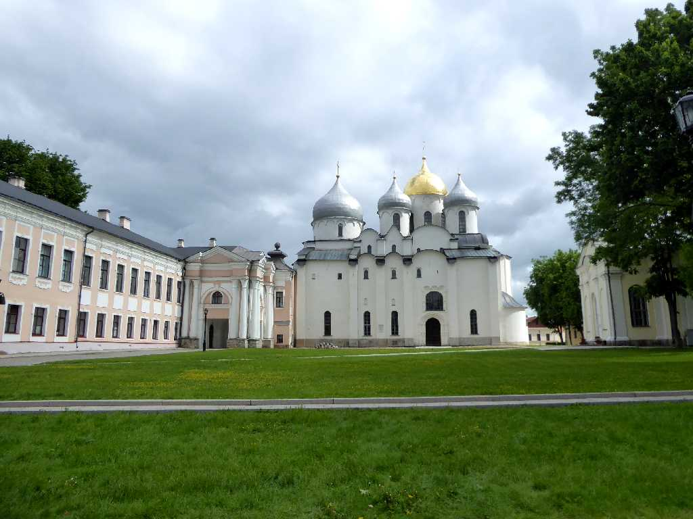
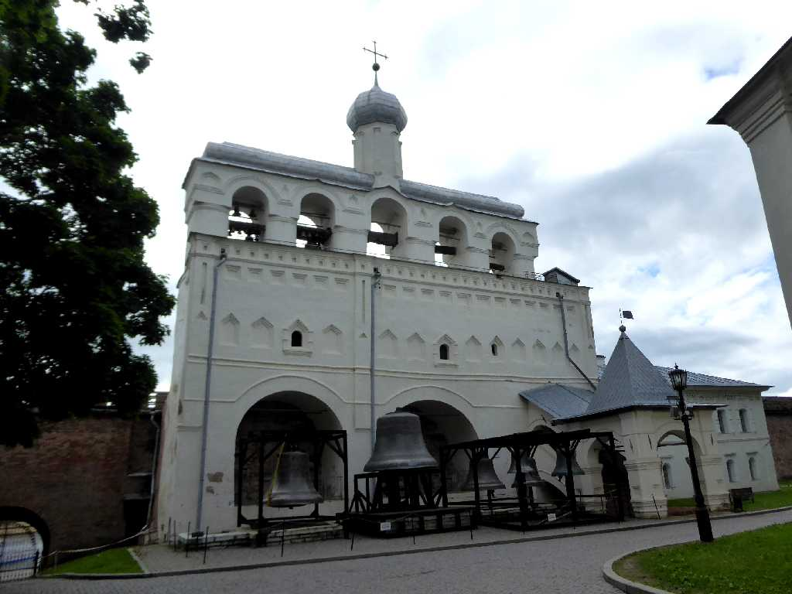
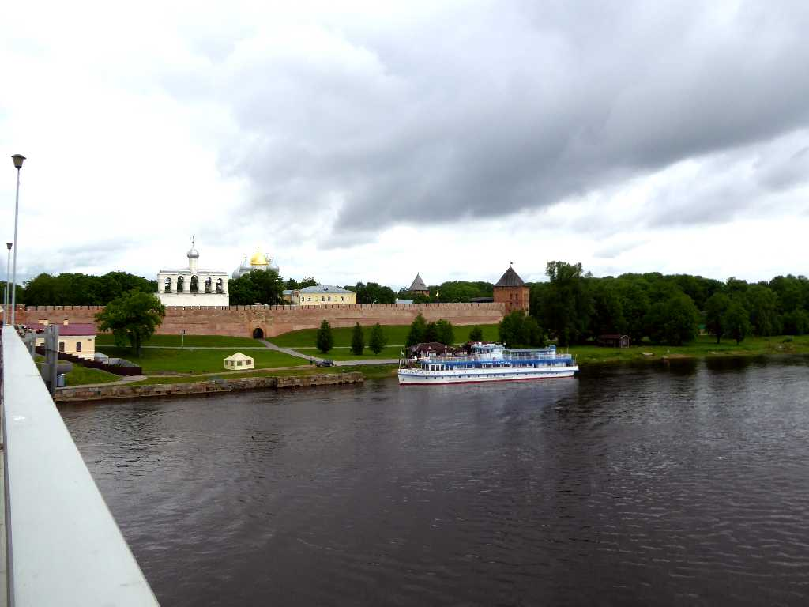
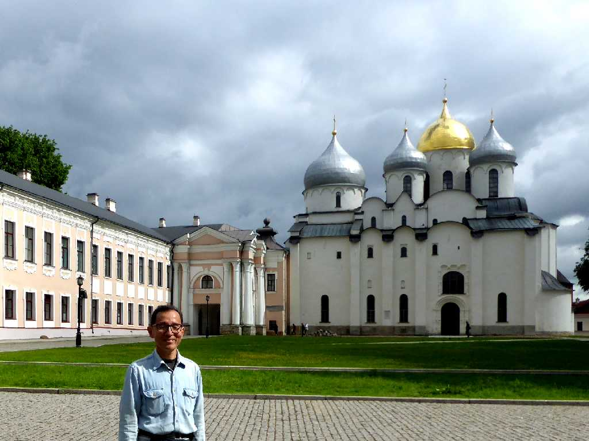

Saint Sophia Cathedral Kremlin Novgorod
ロシア最古の町ノヴゴロドのクレムリン内にある聖ソフィア大聖堂

Bell Saint Sophia Cathedral

Kremlin Pedestrian Bridge Volkhov River
ノルマン人のルス族が９世紀にスラブ人を征服しロシア最初の国家を創ったことからロシア建国の地となっている
Millennium of Russia
１８６２年に創られたロシア建国１,０００年記念碑像

June 13 2017 Novgorod